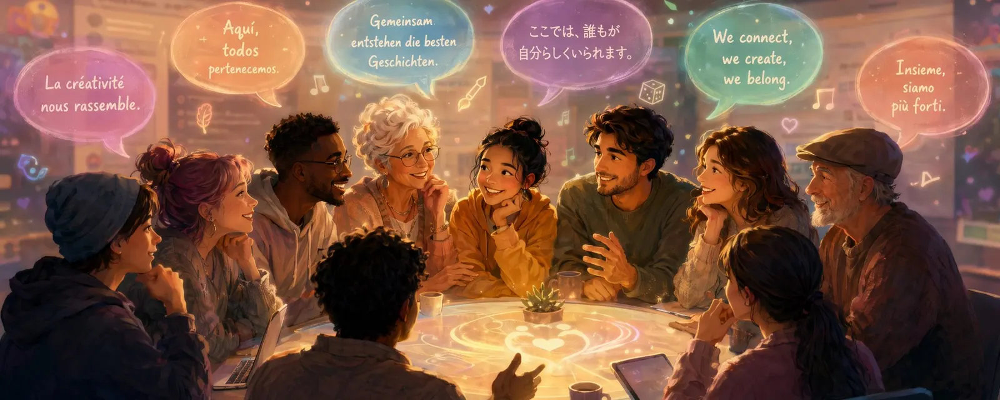

Communication in Text, Part 1: Languages and Emotions
This series is not meant to be scientific and it is not a guide.
It is simply an attempt to create a bit more understanding for why communication can sometimes be more complicated than it should be.
And perhaps it helps someone approach conversations with a little more patience and curiosity.
Sometimes something quite special happens in online communities
People from different countries, cultures and backgrounds meet in the same place. They share their art, create stories together, roleplay, laugh, collaborate, and sometimes build friendships that are deeper than anyone originally expected.
In creative spaces and RP communities especially, something interesting often forms. It becomes more than just sharing images or ideas. Small circles of trust, inspiration and connection begin to appear.
But there is one quiet complication that many of us share.
Most of us are not speaking in our native language.
We may think in German, Romanian, Spanish, French, Japanese or many other languages — but we write in English. And we read the words of people who are also thinking in completely different linguistic and cultural contexts.
And somewhere along the way, something happens that almost everyone has experienced at some point:
Misunderstandings.
Not because someone wanted to hurt another person.
But because words, emotions and meanings sometimes change shape while traveling between languages.
Language and the emotional weight of words
In international communities, English often becomes the shared language.
But words carry different emotional weight depending on language and culture.
A sentence that sounds reflective or calm in one language might appear stronger, harsher or more dramatic in another. Words like hurt, expect, friendship, belonging or status can be interpreted very differently depending on cultural background and personal experience.
And when roleplay enters the picture, things can become even more complex.
In RP communities, several layers often exist at the same time:
- a creative persona
- playful dynamics
- real emotions
- real friendships
Sometimes these layers overlap more than we originally expect. A single word in a profile, a roleplay status, or a comment might touch something deeper in another person — even if that was never the intention.
Languages don’t just translate words — they translate emotions
When we talk about language barriers, we often think about vocabulary or grammar. But something even more important is happening underneath: when we translate language, we are also trying to translate how different cultures express emotions.
Different languages carry very different emotional rhythms.
In French, emotions often live in nuance, subtext and tone. From the outside it can sometimes sound more restrained or subtle — even a bit distant — than it actually is.
In English, emotional expression tends to be more direct on the surface. Phrases like I miss you, I love you, or I’m sorry are commonly written out explicitly. That directness doesn’t necessarily make the feeling deeper or shallower — it simply follows a different emotional style.
In Spanish, emotions in writing often appear warmer and more openly expressive. What might feel overly emotional or intense in another language can feel completely natural there.
In Italian, emotional language often carries a kind of musicality — a smooth intensity that flows naturally in conversation and writing. A translation that is too literal can easily make it sound either flat or overly dramatic.
In German, emotional expression is often more structured and precise. To someone from another linguistic background it can sometimes appear blunt or very direct, but that does not mean the emotion behind it is weaker — it is simply expressed in a more controlled way.
This is one of the biggest traps in translation: people assume that emotional words have perfect equivalents in other languages. In reality, they rarely do.
Expressions like:
- I love you
- je t’aime
- te quiero
- ti voglio bene
- ich hab dich lieb
- ich liebe dich
May look like direct translations, but they often carry very different emotional meanings, contexts and intensities.
That is where many misunderstandings begin.
A sentence can sound cold, distant, overly intense, romantic or harsh in translation — when in its original language it might have been completely normal.
Translating feelings is never just about swapping words.
It is about trying to carry across tone, emotional intensity, relationship dynamics and unspoken subtext.
And that is exactly where language becomes both fascinating — and wonderfully complicated.
Translation tools help — but they are not perfect
Another thing many people rely on are translation tools.
They are incredibly useful, and modern AI-based tools have become surprisingly good. But they are still just tools.
Sometimes a single typo, a missing word or an unusual sentence structure can cause a translation to shift meaning entirely. A calm or neutral sentence might suddenly appear sharper or more emotional than originally intended.
Especially when discussing sensitive or emotional topics, it can help to slow down a little. Rereading a sentence, simplifying wording, or simply asking what someone meant can prevent a small misunderstanding from becoming a bigger one.
A small trick: back translation
If someone does not speak a language very well, proofreading can be difficult.
One simple technique that sometimes helps is back translation.
You translate a text into the target language first, and then translate it back into your own language. If the meaning changes significantly during that process, it can be a sign that the sentence might be unclear or open to misinterpretation.
This method is not perfect, but it can sometimes reveal potential misunderstandings before they happen.
Different ways of processing emotions
Besides language and culture, there is another factor that we sometimes forget:
People simply think and feel differently.
Some people process emotions through conversation. They naturally talk about what they feel, explain their thoughts, and reflect openly.
I personally tend to be part of that group. When something affects me, I often try to talk about it or explain it. Not because I want to pressure anyone — but because that is simply how I process and understand things.
Other people work very differently. They may prefer to process emotions privately, keep certain thoughts to themselves, or express connection more through actions than through long conversations.
Neither approach is wrong. They are simply different ways of navigating emotions and relationships.
When these different communication styles meet in international communities, it becomes easy for two people with good intentions to perceive the same situation in completely different ways.
Taking time
Another important factor is time.
Online communication often moves quickly. Messages are written, read and answered within seconds. When emotions are involved, it can create the feeling that a response must come immediately.
But sometimes it helps to take a step back.
This applies to both sides.
For the person waiting for a reply, patience can prevent quick assumptions. Silence does not automatically mean rejection or disinterest. People have different rhythms, different lives, and sometimes simply need time to find the right words.
For the person responding, taking a moment can also be valuable. Time allows thoughts to settle and emotions to be processed before replying.
In international communities — where many people communicate in a second language — a little more time can often prevent misunderstandings.
A thoughtful reply that comes a few hours later can sometimes communicate much more clearly than a fast emotional reaction.
In the end, we are all just people
Online communities thrive on creativity, curiosity and mutual respect.
Misunderstandings will always happen from time to time. But patience, empathy and a bit of linguistic humility can go a long way toward keeping these spaces welcoming and alive.
After all, most of us are here for a similar reason:
To create something, share ideas, and connect with people we might never have met otherwise.
And maybe it helps to remember one small thing from time to time:
Behind every profile, every comment and every image, there is a real person — someone thinking in a different language, living in a different place, carrying their own thoughts, feelings and experiences.
Sometimes a little patience, a little kindness, and a little curiosity about how others see the world can make those differences feel less like distance — and more like what makes these communities special in the first place.
💬 Have you ever experienced a “lost in translation” moment in an online community?
I think most of us probably have at some point.
First published on X. Replies and conversation live there.